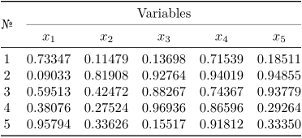
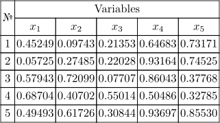
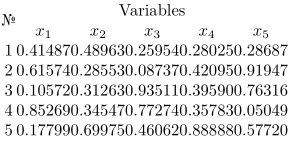
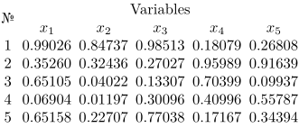
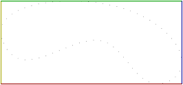
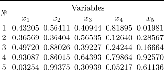
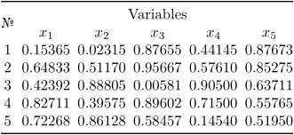
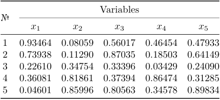

Making book tables ala LaTeX's booktabs proves to be a challenge in
the current ConTeXt ecosystem. This article provides an xtable
(\startxtable…\stopxtable) setup for making such tables, staying
close enough to the original package.
Contents
Prelude
Booktabs table layout
In general, a proper table:
- doesn't have vertical rules,
- uses horizontal rules sparingly and varies their widths. This way it's much easier to distinguish the header, the body and the footer of the table,
- doesn't have any additional offsets except above and below tables as well as between columns. This means each row is spaced just like the lines of regular text.
Compare these two tables and decide which one is more readable.
- 
- 
LaTeX's booktabs makes this easy to achieve. It uses a bunch of rules
and values to achieve the coveted formal (book) table look. The ones of most
importance are:
-
\tabcolsep=0.5em. This is half of the space between columns. This is actually a pure LaTeX value and we won't use it directly; -
\toprule. This is the rule used above headers. Additional space is added below; -
\bottomrule. This is the rule used below footers. Additional space is added above; -
\midrule. This is the rule used between headers and the table body, or footers and the table body. Additional space is added above and below; -
\cmidrule. This is the sub-rule used inside headers/footers when you need a rule only over some columns. Additional space is added above and below. This sort of rule is trimmed on the sides so that it doesn't poke out into the space between columns; -
\heavyrulewidth=0.08em. This is the default\topruleand\bottomrulewidth; -
\lightrulewidth=0.05em. This is the default\midrulewidth; -
\cmidrulewidth=0.03em. This is the default\cmidrulewidth; -
\aboverulesep=0.4ex. This is the default vertical skip above mid and bottom rules; -
\belowrulesep=0.65ex. This is the default vertical skip below top and mid rules; -
\cmidrulekern=0.5em. This is the default trim given tocmidrules.
Tricks used
We will be relying on certain tricks to make this work. They will be mentioned here as well as in the setup explanation. These are:
-
xtableuses \framed for its cells, cell groups, rows and row groups. It's possible to set \framed up through \setupxtable or by passing arguments to \startxtable or its parts \startxtablehead , \startxtablenext , \startxtablebody , \startxtablefoot , \startxrowgroup , \startxrow , \startxcellgroup , \startxcell ; -
Default
locationandstrutsettings of \framed enable us to have cells or even entire rows of empty cells with offsets and even backgrounds. Therefore we will have separate “rule rows” whose only purpose is to be there and force a rule; -
xtableallows one to make named configurations which can be applied to the whole table or its parts mentioned before. This will make it convenient to use whole groups of settings necessary for rules and the whole table to work; - \framed accepts overlays for backgrounds. One can use MetaPost drawings (made with \startuseMPgraphic … \stopuseMPgraphic ) inside overlays and those can use overlay dimensions as well as arguments passed to \framed through \frameddimension ; this is how it can be used to draw things inside cells, cell groups, rows, row groups;
- Overlays don't add to table size, so to make drawn rule widths count, the width will be added to \framed vertical offsets when needed.
Step by step explanation
Starting point
We start with this table here, just like the one shown before. It will serve as an example, but the setup will work for any table with no changes. Don't be too afraid of Lua code in \startluacode…\stopluacode, it simply generates random numbers for cells just so that we have something in the table body.
-
\setupxtable[ option={tight}, ] \startxtable \startxtablehead \startxrow[align=center] \startxcell[nr=2, align={center, lohi}] № \stopxcell \startxcell[nc=5] Variables \stopxcell \stopxrow \startxrow[align=center] \dorecurse{5}{% \startxcell \m{x_{\recurselevel}} \stopxcell }% \stopxrow \stopxtablehead \startxtablebody \startluacode for i=1,5 do context.startxrow({align = "center"}); context.startxcell(); context(i); context.stopxcell(); for j=1, 5 do local num = math.random(); local result = string.format("%.5f", num); context.startxcell(); context(result); context.stopxcell(); end context.stopxrow(); end \stopluacode \stopxtablebody \stopxtable
Making a booktabs configuration and custom parameters
Let's make an xtable configuration for book tables.
\definextable[booktabs]
Currently it's empty. We'll add booktabs parameters used ahead of
time. These will be used as constants in case one needs the original values.
\setupxtable[booktabs][ heavyrulewidth=.08em, lightrulewidth=.05em, cmidrulewidth=.03em, cmidrulekern=.5em, aboverulesep=.4ex, belowrulesep=.65ex, ]
The values we will actually use are different.
\setupxtable[booktabs][ heavyrulewidth=.08em, lightrulewidth=.05em, cmidrulewidth=.03em, cmidrulekern=.5em, aboverulesep=.4ex, belowrulesep=.65ex, % toprulethickness=\frameddimension{heavyrulewidth}, bottomrulethickness=\frameddimension{heavyrulewidth}, midrulethickness=\frameddimension{lightrulewidth}, cmidrulethickness=\frameddimension{cmidrulewidth}, cmidrulekernleft=0pt, % for a reason, explained later cmidrulekernright=0pt, abovespace=\frameddimension{aboverulesep}, belowspace=\frameddimension{belowrulesep}, ]
Layout
To ensure the desired layout (not counting the spaces above and below rules),
it's necessary to disable the frame around each cell, set its thickness to zero
and set all offsets to zero. Disabling the frame with frame=off
hides it, but the space taken by it remains. Set the rule thickness to 0 with
rulethickness=0pt to remove that space. Finally, remove all offsets
with offset=0pt.
\setupxtable[booktabs][ frame=off, rulethickness=0pt, offset=0pt, % heavyrulewidth=.08em, lightrulewidth=.05em, cmidrulewidth=.03em, cmidrulekern=.5em, aboverulesep=.4ex, belowrulesep=.65ex, % toprulethickness=\frameddimension{heavyrulewidth}, bottomrulethickness=\frameddimension{heavyrulewidth}, midrulethickness=\frameddimension{lightrulewidth}, cmidrulethickness=\frameddimension{cmidrulewidth}, cmidrulekernleft=0pt, % for a reason, explained later cmidrulekernright=0pt, abovespace=\frameddimension{aboverulesep}, belowspace=\frameddimension{belowrulesep}, ]
Having replaced \startxtable with \startxtable[booktabs], we get a following table.
- 
Obviously, it's a little crammed horizontally, but vertically it's exactly how
we want it. There are two ways to add some space between columns. Setting the
columndistance parameter is arguably a better approach since it plays
along nicely with how space is allocated to cells; it also means
\cmidrules come trimmed already as all rules are drawn inside cells
and the intercolumn space outside is not part of them. This is why we keep the
trim parameters at 0 pt, there's no need to use them outside of specific cases.
You will run into issues if you happen to want your sub-rules to actually poke
out into intercolumn space, however.
Setting the left and right offsets with the loffset and
roffset parameters is another way to do it, but the offsets count as
cell space which means trouble when trying to align text in cells with
unbalanced offsets (it won't be properly centered if you want it centered).
Let's add the columndistance setting now.
\setupxtable[booktabs][ frame=off, rulethickness=0pt, offset=0pt, columndistance=.5em, % LaTeX's \tabcolsep % heavyrulewidth=.08em, lightrulewidth=.05em, cmidrulewidth=.03em, cmidrulekern=.5em, aboverulesep=.4ex, belowrulesep=.65ex, % toprulethickness=\frameddimension{heavyrulewidth}, bottomrulethickness=\frameddimension{heavyrulewidth}, midrulethickness=\frameddimension{lightrulewidth}, cmidrulethickness=\frameddimension{cmidrulewidth}, cmidrulekernleft=0pt, % for a reason, explained later cmidrulekernright=0pt, abovespace=\frameddimension{aboverulesep}, belowspace=\frameddimension{belowrulesep}, ]
- 
Beautiful. We're getting there.
Rules
Our rules will have two parts to each. There will be the drawing part
consisting of a MetaPost picture, and there will be the xtable
configuration part where the drawing is enabled and proper spacing is added.
Top rule
Let's start with the drawing itself. There are some crucial things to know about MetaPost.
Paths are like plans, the points which define a line. You can draw a path
and/or fill the area delimited by it. You can define paths point by point or
get them from functions. Here we will use the latter. The …boundary
functions return one of the edges of the bounding box of whatever path you give
to it. Here is a modified example from the
Metafun manual.
-
\startuseMPgraphic{bounds} path p ; p := (0cm,1cm) .. (2cm,2cm) .. (4cm,0cm) .. (2.5cm,1cm) .. cycle ; draw p dashed withdots ; draw leftboundary p withcolor .625yellow ; draw topboundary p withcolor .625green ; draw rightboundary p withcolor .625blue ; draw bottomboundary p withcolor .625red; \stopuseMPgraphic \useMPgraphic{bounds}
- 
A path called OverlayBox is available when making an overlay, and it
simply is the outer bounds (that is, including offsets) of a cell/row/group in
our case. Since our rules are in separate rows, it doesn't matter too much if
we pick the top edge or the bottom one to draw the rule. It will simply be
easier to make a top rule with the top edge because of the top offset right
below.
First, we fetch the top rule thickness from \framed parameters. Something to note is that drawing on the boundaries will inevitably bring some of the drawing out of bounds. In our case, the top half of the rule (that is, half of the thickness) will be out of bounds. This is why we prepare an offset of half the thickness downwards. Then, we prepare the path as the top boundary of the overlay box shifted downwards half the rule thickness, which we can then draw with a square pen. To not have the bits of the rule poking at the sides, we clip the current picture (the rule). Finally, we set the current picture bounding box to the overlay's.
\startuseMPgraphic{toprule} path upper_rule ; numeric upper_thickness ; numeric rule_sep ; upper_thickness := \frameddimension{toprulethickness} ; rule_sep := -upper_thickness/2 ; upper_rule := topboundary OverlayBox shifted (0, rule_sep); draw upper_rule withpen pensquare scaled upper_thickness ; clip currentpicture to OverlayBox ; setbounds currentpicture to OverlayBox ; \stopuseMPgraphic
With the picture prepared, we can make an overlay with it. Then, we can make a
configuration for the top rule that inherits from the booktabs
configuration. Since the top rule is drawn at the top boundary and it doesn't
have its own thickness, we have to set the top offsets to the sum of
belowrulesep and toprulethickness to account for both the
rule and the space.
\defineoverlay[toprule][\useMPgraphic{toprule}] \definextable[booktabs:toprule][booktabs] \setupxtable[booktabs:toprule][ background=toprule, toffset=\dimexpr\frameddimension{belowspace} + \frameddimension{toprulethickness}, ]
Finally, let's add this row to the table header:
\startxrow[booktabs:toprule] \startxcell[nc=6]\stopxcell \stopxrow
Note that it has a single spanning cell, as wide as all the cells.
- 
Bottom rule
The bottom rule works similarly. Here is the code that gets added:
\startuseMPgraphic{bottomrule} path lower_rule ; numeric lower_thickness ; numeric rule_sep ; lower_thickness := \frameddimension{bottomrulethickness} ; rule_sep := lower_thickness/2 ; lower_rule := bottomboundary OverlayBox shifted (0, rule_sep) ; draw lower_rule withpen pensquare scaled lower_thickness ; clip currentpicture to OverlayBox ; setbounds currentpicture to OverlayBox ; \stopuseMPgraphic \defineoverlay[bottomrule][\useMPgraphic{bottomrule}] \definextable[booktabs:bottomrule][booktabs] \setupxtable[booktabs:bottomrule][ background=bottomrule, boffset=\dimexpr\frameddimension{aboverulesep} + \frameddimension{bottomrulethickness}, ]
Add a table footer with \startxtablefoot…\stopxtablefoot and a row just like with the top rule:
\startxtablefoot \startxrow[booktabs:bottomrule] \startxcell[nc=6]\stopxcell \stopxrow \stopxtablefoot
- 
Mid/cmid rules
Here the trouble is that the rule needs to be drawn right between the offsets.
An easy way to do it is to start with one of the boundaries and then shift
upwards or downwards. For \cmidrule, we use the corner functions
instead of the boundary ones as to get the starting and ending points. That
will let us apply trimming if necessary.
\startuseMPgraphic{midrulebelow} path lower_rule ; numeric lower_thickness ; numeric rule_sep ; lower_thickness := \frameddimension{midrulethickness} ; rule_sep := \frameddimension{belowspace} + lower_thickness/2 ; lower_rule := bottomboundary OverlayBox shifted (0, rule_sep) ; draw lower_rule withpen pensquare scaled lower_thickness ; clip currentpicture to OverlayBox ; setbounds currentpicture to OverlayBox ; % finally, set picture bounds to the box's bounds \stopuseMPgraphic \startuseMPgraphic{cmidrulebelow} path lower_rule ; numeric lower_thickness ; numeric rule_sep ; numeric rule_kerns[] ; rule_kerns[1] := \frameddimension{cmidrulekernleft} ; rule_kerns[2] := -\frameddimension{cmidrulekernright} ; lower_thickness := \frameddimension{cmidrulethickness} ; rule_sep := \frameddimension{belowspace} + lower_thickness/2 ; lower_rule := (llcorner OverlayBox shifted (rule_kerns[1], 0) -- lrcorner OverlayBox shifted (rule_kerns[2], 0)) shifted (0, rule_sep) ; draw lower_rule withpen pensquare scaled lower_thickness ; clip currentpicture to OverlayBox ; setbounds currentpicture to OverlayBox ; % finally, set picture bounds to the box's bounds \stopuseMPgraphic \defineoverlay[midrule][\useMPgraphic{midrulebelow}] \defineoverlay[cmidrule][\useMPgraphic{cmidrulebelow}] \definextable[booktabs:midrule][booktabs] \setupxtable[booktabs:midrule][ background=midrule, toffset=\dimexpr\frameddimension{abovespace} + \frameddimension{midrulethickness}/2, boffset=\dimexpr\frameddimension{belowspace} + \frameddimension{midrulethickness}/2, ] \definextable[booktabs:cmidrule][booktabs] \setupxtable[booktabs:cmidrule][ background=cmidrule, toffset=\dimexpr\frameddimension{abovespace} + \frameddimension{cmidrulethickness}/2, boffset=\dimexpr\frameddimension{belowspace} + \frameddimension{cmidrulethickness}/2, ]
Now, let's add the appropriate rows. Since the row count changes in the header, the № cell will now be taking up 3 rows, not just 2.
\startxtablehead \startxrow[booktabs:toprule] \startxcell[nc=6]\stopxcell \stopxrow \startxrow[align=center] \startxcell[nr=3, align={center, lohi}] № \stopxcell \startxcell[nc=5] Variables \stopxcell \stopxrow \startxrow[booktabs:cmidrule] \startxcell[nc=5]\stopxcell \stopxrow \startxrow[align=center] \dorecurse{5}{% \startxcell \m{x_{\recurselevel}} \stopxcell }% \stopxrow \startxrow[booktabs:midrule] \startxcell[nc=6]\stopxcell \stopxrow \stopxtablehead
- 
With that, we have everything we need. This setup works well even with
multipage booktabs tables.
Full code
Feel free to place this in an environment file for later use. Don't forget to load the environment. Improvements are very much welcome.
\startuseMPgraphic{toprule} path upper_rule ; numeric upper_thickness ; numeric rule_sep ; upper_thickness := \frameddimension{toprulethickness} ; % get width from a parameter given to \framed rule_sep := -upper_thickness/2 ; upper_rule := topboundary OverlayBox shifted (0, rule_sep); % top boundary of the cell, right above the top offset draw upper_rule withpen pensquare scaled upper_thickness ; % draw the top boundary with a square pen of given width clip currentpicture to OverlayBox ; % the rule will poke out a little on the sides, so we clip the drawn rule setbounds currentpicture to OverlayBox ; % finally, set picture bounds to the box's bounds \stopuseMPgraphic \startuseMPgraphic{bottomrule} path lower_rule ; numeric lower_thickness ; numeric rule_sep ; lower_thickness := \frameddimension{bottomrulethickness} ; rule_sep := lower_thickness/2 ; lower_rule := bottomboundary OverlayBox shifted (0, rule_sep) ; draw lower_rule withpen pensquare scaled lower_thickness ; clip currentpicture to OverlayBox ; setbounds currentpicture to OverlayBox ; \stopuseMPgraphic \startuseMPgraphic{midruleabove} path upper_rule ; numeric upper_thickness ; numeric rule_sep ; upper_thickness := \frameddimension{midrulethickness} ; rule_sep := -\frameddimension{abovespace} - upper_thickness/2 ; upper_rule := topboundary OverlayBox shifted (0, rule_sep) ; draw upper_rule withpen pensquare scaled upper_thickness ; clip currentpicture to OverlayBox ; setbounds currentpicture to OverlayBox ; \stopuseMPgraphic \startuseMPgraphic{midrule} path center_rule ; numeric center_thickness ; center_thickness := \frameddimension{midrulethickness} ; center_rule := center leftboundary OverlayBox -- origin -- center rightboundary OverlayBox ; draw center_rule withpen pensquare scaled center_thickness ; clip currentpicture to OverlayBox ; setbounds currentpicture to OverlayBox ; \stopuseMPgraphic \startuseMPgraphic{midrulebelow} path lower_rule ; numeric lower_thickness ; numeric rule_sep ; lower_thickness := \frameddimension{midrulethickness} ; rule_sep := \frameddimension{belowspace} + lower_thickness/2 ; lower_rule := bottomboundary OverlayBox shifted (0, rule_sep) ; draw lower_rule withpen pensquare scaled lower_thickness ; clip currentpicture to OverlayBox ; setbounds currentpicture to OverlayBox ; % finally, set picture bounds to the box's bounds \stopuseMPgraphic \startuseMPgraphic{cmidruleabove} path upper_rule ; numeric upper_thickness ; numeric rule_sep ; numeric rule_kerns[] ; rule_kerns[1] := \frameddimension{cmidrulekernleft} ; rule_kerns[2] := -\frameddimension{cmidrulekernright} ; upper_thickness := \frameddimension{cmidrulethickness} ; rule_sep := -\frameddimension{abovespace} - upper_thickness/2 ; upper_rule := (ulcorner OverlayBox shifted (rule_kerns[1], 0) -- urcorner OverlayBox shifted (rule_kerns[2], 0)) shifted (0, rule_sep) ; draw upper_rule withpen pensquare scaled upper_thickness ; clip currentpicture to OverlayBox ; setbounds currentpicture to OverlayBox ; \stopuseMPgraphic \startuseMPgraphic{cmidrulebelow} path lower_rule ; numeric lower_thickness ; numeric rule_sep ; numeric rule_kerns[] ; rule_kerns[1] := \frameddimension{cmidrulekernleft} ; rule_kerns[2] := -\frameddimension{cmidrulekernright} ; lower_thickness := \frameddimension{cmidrulethickness} ; rule_sep := \frameddimension{belowspace} + lower_thickness/2 ; lower_rule := (llcorner OverlayBox shifted (rule_kerns[1], 0) -- lrcorner OverlayBox shifted (rule_kerns[2], 0)) shifted (0, rule_sep) ; draw lower_rule withpen pensquare scaled lower_thickness ; clip currentpicture to OverlayBox ; setbounds currentpicture to OverlayBox ; % finally, set picture bounds to the box's bounds \stopuseMPgraphic \defineoverlay[toprule][\useMPgraphic{toprule}] \defineoverlay[bottomrule][\useMPgraphic{bottomrule}] \defineoverlay[midrule][\useMPgraphic{midrulebelow}] \defineoverlay[midruleabove][\useMPgraphic{midruleabove}] \defineoverlay[midrulebelow][\useMPgraphic{midrulebelow}] \defineoverlay[cmidrule][\useMPgraphic{cmidrulebelow}] \defineoverlay[cmidruleabove][\useMPgraphic{cmidruleabove}] \defineoverlay[cmidrulebelow][\useMPgraphic{cmidrulebelow}] \definextable[booktabs] \setupxtable[booktabs][ frame=off, rulethickness=0pt, offset=0pt, columndistance=1em, heavyrulewidth=.08em, lightrulewidth=.05em, cmidrulewidth=.03em, toprulethickness=\frameddimension{heavyrulewidth}, bottomrulethickness=\frameddimension{heavyrulewidth}, midrulethickness=\frameddimension{lightrulewidth}, cmidrulethickness=\frameddimension{cmidrulewidth}, cmidrulekern=.5em, cmidrulekernleft=0pt, cmidrulekernright=0pt, aboverulesep=.4ex, belowrulesep=.65ex, abovespace=\frameddimension{aboverulesep}, belowspace=\frameddimension{belowrulesep}, ] \definextable[booktabs:toprule][booktabs] \setupxtable[booktabs:toprule][ background=toprule, toffset=\dimexpr\frameddimension{belowspace} + \frameddimension{toprulethickness}, ] \definextable[booktabs:bottomrule][booktabs] \setupxtable[booktabs:bottomrule][ background=bottomrule, boffset=\dimexpr\frameddimension{abovespace} + \frameddimension{bottomrulethickness}, ] \definextable[booktabs:midrule][booktabs] \setupxtable[booktabs:midrule][ background=midrule, toffset=\dimexpr\frameddimension{abovespace} + \frameddimension{midrulethickness}/2, boffset=\dimexpr\frameddimension{belowspace} + \frameddimension{midrulethickness}/2, ] \definextable[booktabs:cmidrule][booktabs] \setupxtable[booktabs:cmidrule][ background=cmidrule, toffset=\dimexpr\frameddimension{abovespace} + \frameddimension{cmidrulethickness}/2, boffset=\dimexpr\frameddimension{belowspace} + \frameddimension{cmidrulethickness}/2, ]